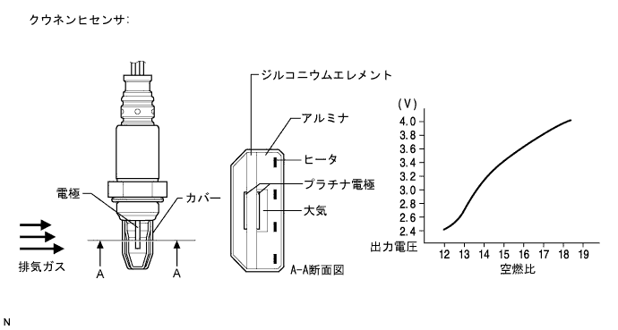
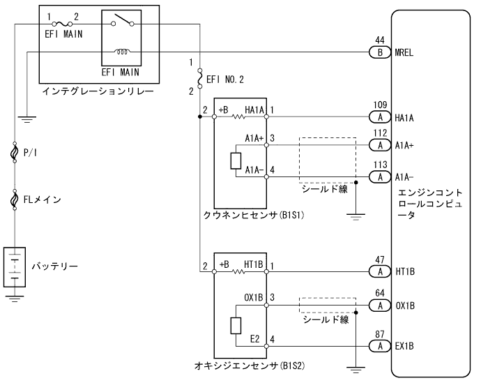
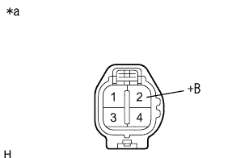

DTC P0031/21 O2 (A/F) Sensor Heater Performance DeteriorationB1S1 |
DTC P0032/21 O2 (A/F) Sensor Heater OvercurrentB1S1 |

| DTCNo. SAE/TCCS | DTC Detection Conditions 1. Diagnosis conditions 2. Malfunction status 3. Malfunction duration 4. Other | Inspection Area |
|---|---|---|
| P0031/21 (B1S1) |
|
|
| P0032/21 (B1S1) |
|
|

| Step 1 | Inspect Air Fuel Ratio Sensor |
Disconnect the air fuel ratio sensor connector.
 |
Using SST (Toyota electrical tester), measure the resistance between the connector terminals.
| Tester connection air fuel ratio sensor | Condition | Standard |
|---|---|---|
| 2(+B) - 1(HA1A) | 20°C | 1.8 to 3.4 Ω |
| 1(HA1A) - 4(A1A-) | Always | 10 kΩ or higher |
| *a | Component without harness connected (Air Fuel Ratio Sensor) |
|
| ||||
| OK | |
| Step 2 | Inspect Wire Harness and Connector (Air Fuel Ratio Sensor Heater Power Source Circuit) |
for reference. |
Turn IG ON.
Using SST (Toyota electrical tester), measure the voltage between the terminals of the air fuel ratio sensor vehicle side connector.
| Tester connection air fuel ratio sensor vehicle side connector - body ground | Condition | Standard |
|---|---|---|
| 2 (+B) - Body ground | IG ON | 11 to 14 V |
| *a | Front view of wire harness connector (to Air Fuel Ratio Sensor) |
|
| ||||
| OK | |
| Step 3 | Inspect Wire Harness and Connector (Engine Control Computer - Air Fuel Ratio Sensor) |
for reference.Disconnect connector A of the engine control computer.
Using SST (Toyota electrical tester), measure the resistance between the terminals of the engine control computer and the air fuel ratio sensor vehicle side connector. (For Terminals of ECU, see)
| Tester connection engine control computer vehicle side connector - air fuel ratio sensor vehicle side connector | Condition | Standard |
|---|---|---|
| A109(HA1A) - 1(HA1A) | Always | Below 1 Ω |
| Tester connection engine control computer vehicle side connector and air fuel ratio sensor vehicle side connector - other terminals and body ground | Condition | Standard |
|---|---|---|
| A109 (HA1A) and 1 (HA1A) - other terminals and body ground | Always | 10 kΩ or higher |
|
| ||||
| OK | ||
| ||